Fundamentals of organic chemistry: Course Structure#
Professor: Jonathan Goodman (Yusuf Hamied Department of Chemistry)
The course has three lectures:
L1: How atoms fit together
L2: How molecules are different
L3: How molecules react
Lecture 1: How atoms fit together#
Learning objectives:
The properties of atoms
How atoms interact
Building molecules from atoms
How to work with organic molecules
Atoms#
In these three lectures, I will outline how atoms interact, focussing on the first two rows of the periodic table, and how this leads to organic chemistry. All of the life that we know about is centred around the chemistry of these few elements and so an understanding of their chemistry should provide the best available inspiration for thinking about non-terrestrial life.
We will begin with atoms. We will consider protons, neutrons and electrons and nothing else, apart from occasional flashes of light. Sub-atomic processes have little direct relevance to organic chemistry, and we will not discuss them here.
Protons have a positive charge, plus one in atomic units, and electrons have a negative charge, minus one in atomic units. If we put an electron close to a proton, we might expect the electron to fall into the proton. This would greatly simplify all of chemistry. However, this does not happen.
Both protons and electrons are so small that quantum effects must be taken into account. If we consider the proton as a fixed point charge, it pulls the electron in to itself. However, the electron is not a point charge, and so this compacts its wavefunction rather than collapsing into the nucleus. The process stops being energetically favourable when the energy gained by pulling the electron closer to the proton balances the energy required to further compact the wavefunction. The electron falling into the proton would contradict Heisenberg’s uncertainty principle, as both the position and the energy of the electron would be precisely known. The square of the wavefunction gives a description of the distribution of the electron and is called an orbital.
This can be analysed in terms of particles in spherical boxes with the energy of the particle being proportional to the reciprocal of the distance to the proton. This gives an expression for the wavefunction of the electron: \(\Psi = e^{-r/a_0}\), where \(a_0\) is the Bohr radius. The Bohr radius is approximately equal to the most probable distance between the proton and the electron, but can be defined precisely as \(a_0 = \frac{4\pi \epsilon_0 \hbar^2}{e^2 m_e}\). The Bohr radius is about half of an Ångstrom which is \(10^{-10}\) metres. Ångstrom turn out to be very useful units for considering molecules on an atomic scale. Although the Bohr radius is the most probable distance from the nucleus, the majority of electron density is outside the Bohr radius and so atoms are much less small than the Bohr radius might suggest.
The expression \(e^{-r/a_0}\) only has a maximum at \(r=0\), of course, but the probability density for the electron at a particular distance, which corresponds to the square of the wavefunction, can be multiplied by the area of a sphere of this radius to work out the total amount of electron density at this distance from the nucleus. This is called the radial distribution function, which does have a maximum.
\(\Psi = e^{-r/a_0}\) is the lowest energy wavefunction and contains no nodes. This describes the ground state of the hydrogen atom: the electron is in a standing wave with no nodes. It can be excited to higher energy states, with energies related to the number of nodes in the wavefunction. A proton is almost two thousand times heavier than an electron, and so their wavefunctions can usually be treated separately (Born-Oppenheimer approximation). Other wavefunctions can be constructed, orthogonal to this one and with higher energies because they contain nodes. The Laguerre polynomials describe the radial part of the wavefunction: \(\Psi = e^{-r/a_0}\) has no nodes, \(\Psi = (2-r/a_0)e^{-r/2a_0}\) has one node and \(\Psi = (27-18r/a_0+2r^2/a_0^2)e^{-r/3a_0}\) has two nodes. Because we are focussing on the first two rows of the periodic table, we need go no further than this.
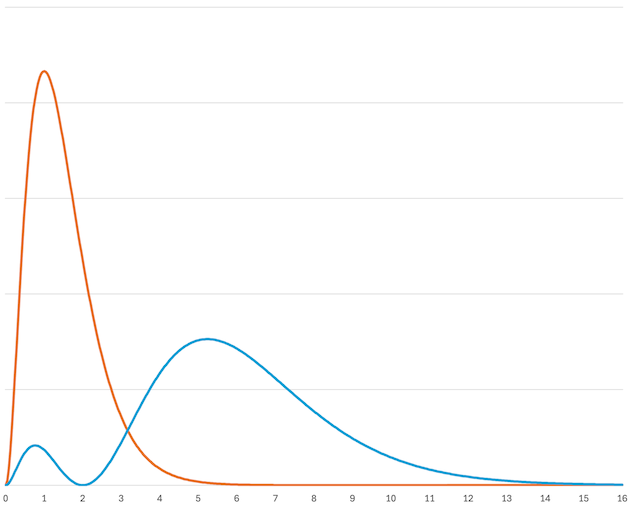
Figure 1: The radial distribution functions for the wavefunctions \(\Psi = e^{-r}\) (orange) and \(\Psi = (2-r)e^{-r/2}\) (blue). The x-axis is given in bohr (the Bohr radius, \(a_0\)). The lowest energy (orange) peaks at about \(a_0\). s are usually sketched to include about 90 % of the electron density, which is at about \(2.6 a_0\) for the orange line and \(9 a_0\) for the blue line. Representations of s include large regions with little electron density.
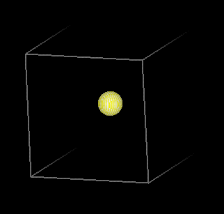 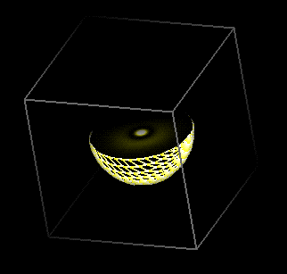 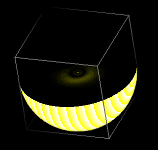
Figure 2: Illustrations of the three lowest energy s with no angular nodes. The box is the same size for all of them, and the surface encloses 90 % of the electon density. The first is conventionally labelled \(1s\) and has no nodes; the second is labelled \(2s\) and has one radial node; the third is \(3s\) and has two radial nodes.
Orbitals and wavefunctions can have angular nodes as well as radial nodes. These can be described by the spherical harmonics. There are three possibilities with one angular node, five with two angular nodes, and so on. For the first two rows of the periodic table, occupied orbitals have either no angular nodes or one. The three orbitals with a single angular node can be represented as dumbells with nodes in the \(x=0\) plane, the \(y=0\) plane and the \(z=0\) plane. The formulae are \(\Psi_z = (r/a_0)e^{-r/2a_0} cos\theta\); \(\Psi_x = (r/a_0)e^{-r/2a_0} cos\theta cos\phi\); and \(\Psi_y = (r/a_0)e^{-r/2a_0} cos\theta sin\phi\);
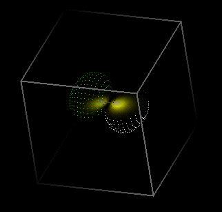
Figure 3: One of the three orbitals with no radial nodes and one angular node. The conventional label is \(2p\), and the three orientations are labelled \(2p_x\), \(2p_y\) and \(2p_z\).
The orbitals are labelled by the principal quantum number, \(n\), which takes integer values 1, 2, 3, etc. This number is one more than the number of nodes in the orbital. For a single electron system, as we have been discussing, \(n\) determines the energy of the electron in the orbital. There are four orbitals with \(n = 2\) and these need to be distinguished by further quantum numbers. The angular moment quantum number, \(l\), takes values from \(0\) up to \(n - 1\). So for \(n = 1\), \(l\) must be zero. For \(n = 2\), \(l\) can be zero or one. It might be convenient just to use these numbers, but atomic emission spectroscopy revealed in the nineteenth century series of spectral lines. George Liveing and James Dewar, at Cambridge, labelled two of these sharp and diffuse. The principal and fundamental lines were also observed, so it was natural to use the sequence of letters s, p, d, f, g, h, etc instead of \(0\), \(1\), \(2\), \(3\), \(4\), \(5\), etc. This leads to the labels used in Figure 2 and Figure 3. As noted in Figure 3 there are three \(2p\) orbitals, and these are labelled with the magnetic quantum number, \(m_l\), which has values from \(+l\) to \(-l\). For \(n = 1\), \(l\) and \(m_l\) both have to be zero. For \(n = 2\), \(l\) can be zero or one. If \(l = 1\) then \(m_l\) can be \(-1\), \(0\), \(1\), corresponding to \(2p_x\), \(2p_y\) and \(2p_z\).
The final quantum number is the spin angular momentum, \(m_s\), which labels the spin of an electron. This can be either \(+\frac{1}{2}\) or \(-\frac{1}{2}\). With these four quantum numbers, \(n\), \(l\), \(m_l\) and \(m_s\) we can label all orbitals.
Elements#
One proton and one electron is a hydrogen atom. Increasing the charge on the nucleus and balancing it with electrons gives the other elements. Multi-electron atoms are slightly more complicated because the low energy electrons affect the energies of the higher energy orbitals. \(2s\) becomes lower in energy the \(2p\). Electrons occupy the lowest energy available orbital (The aufbau (building up) principle). If there is a choice of two orbitals with the same energy, electrons will align their spins, so far as possible (Hund’s rule).
Elements are named by the number of protons that they have. This quantity is called the atomic number. The names are the consequences of historical and political developments, and so are complicated mixtures of ideas. For this course, we are only going to consider the first ten elements: hydrogen (H), helium (He), lithium (Li), beryllium (Be), boron (B), carbon (C), nitrogen (N), oxygen (O), fluorine (F), and neon (Ne). I have listed these in order of the number of protons that they have, going from one for hydrogen, to ten for neon. The periodic table has many more elements that these, but it turns out that the first ten are enough to create many of the molecules of terrestrial life. All sugars, nearly all amino acids, DNA and RNA (except for the occasional atom of the backbone), and most natural products comprise these elements and no others. Non-terrestrial life might be completely different, of course, but these elements are enough for most of the life that we know.
The \(1s\) orbital can contain two electrons, because \(m_s\) can be either \(+\frac{1}{2}\) or \(-\frac{1}{2}\). Hydrogen has one electron and helium has two electrons. This is the first row (period) of the periodic table. A third electron goes into the lowest empty orbital, which is \(2s\). After the \(2s\) orbital is filled, the \(2p\) orbitals start to fill up. Neon (Ne, atomic number 10, ten electrons) has \(1s\), \(2s\) and \(2p\) all full, so the next element starts to fill the \(3s\) orbital.
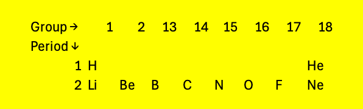
Figure 4: The fraction of the periodic table we will consider in these lectures
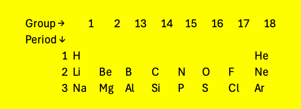
Figure 5: The first three rows of the periodic table. The elements are arranged in increasing order of atomic number. The third row fills up the \(3s\) and \(3p\) orbitals. It turns out that elements with partially filled orbitals with \(n=3\) have similar properties to elements with the same filled orbitals at the \(n=2\) level. Lithium (Li) and sodium (Na) have similar properties, as they both have one electron on their highest energy orbital. These similarities continue across the period.
As the number of protons in the nucleus increases, the \(3d\) orbitals become accessible. These can hold ten electrons. It turns out that the \(4s\) orbitals are filled before the \(3d\) orbitals, so the periodic table expands as shown in Figure 6 in the fourth and fifth rows.
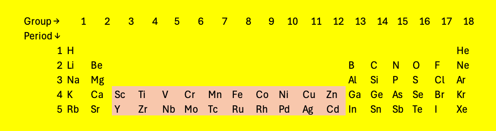
Figure 6: The periodic table with two rows of elements with partially filled \(d\) orbitals: the transition metals
With higher atomic numbers, the \(4f\) and \(5f\) orbitals start to fill.
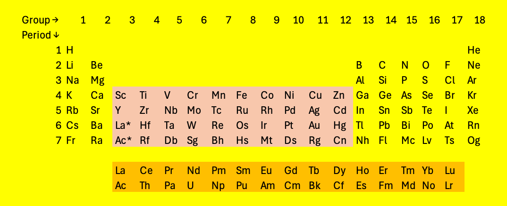
Figure 7: The periodic table, as conventionally written, with the \(f\) orbitals in a separate section
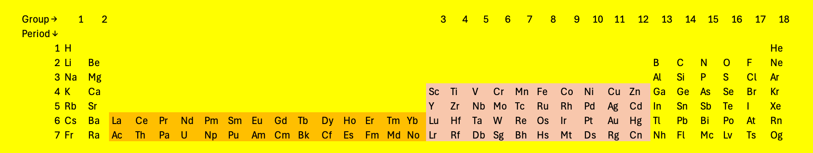
Figure 8: The periodic table as might be considered more logical, with the \(f\) orbitals in the main sequence. The table is becoming inconveniently wide
Figure 7 and Figure 8 show the current periodic table, stopping at element 118 Oganesson (Og). Oganesson has a half life of a fraction of a second and only a few atoms have been produced on earth. Elements with higher atomic numbers may exist, and names are ready for them (Figure 9).
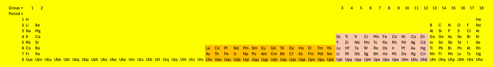
Figure 9: The eighth row of the periodic table. None of these elements have been observed, so far.
Across the second row of the periodic table, succcessive atoms have an extra electron and also an extra proton in the nucleus holding the electrons in. These two effects counteract each other, and so the size of the atoms of the second row are all rather similar. Size can be defined in different ways, as the wavefunction does not suddenly stop a precise distance from the nucleus. The van der Waals radius is the radius of a hard sphere representing how close atoms can get together in the absence of a chemical bond. All of the second row elements have a van der Waals radius of approximately 1.5 Å. Hydrogen, in the first row, is rather smaller with a van der Waals radius of about 1.1 Å.
Shapes of atoms and molecules#
This model tells us that atoms are spheres, with electron density mainly around the nucleus and fading away at a distance from the nucleus. If atoms are sticky, squashy, spheres, then they should pack together to form molecules. This turns out to be true, some of the time.
Beryllium (Be), atomic number 4, is quite rare, on a universe-wide scale, as it usually turns into heavier elements in the core of stars. Its toxicity to terrestrial life means that its use is limited. In its elemental form it is a good example of a substance in which the atoms pack together as tightly as possible. On a two dimensional surface, a triangular shape is the closest packed (Figure 10). A second layer can be added with the new atoms in the dips in the first layer. There are only half as many atoms as dips, so a third layer can be arranged in two different ways. The third layer can be placed over the places where you can see through both the first and second layers (labelled fcc) or placed in the alternative dips so it is still possible to see through all of the layers (hcp). These two arrangements are equally close packed, very similar to each other, and distinct. Beryllium atoms choose hcp over fcc. If beryllium atoms were simply sticky spheres, the two forms would be equally likely.
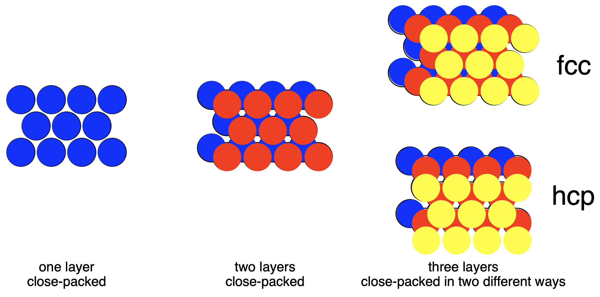
Figure 10: Face Centred Cubic (fcc) and Hexagonal Close Packed (hcp) packing of spheres.
This sort of assembly of atoms is a metallic structure. Hydrogen (H) forms a similar structure, but only at very high pressures such as those that are present in the centres of planets. The hundreds of gigapascals required for this are hard to achieve on earth. Lithium (Li) (atomic number 3) is also a metal and the atoms pack closely together. Lithium adopts a less dense arrangement called body-centred cub (bcc) where the atoms are at the corners of a cube with an additional lithium atom in the middle of every cube. All of the atoms are close to other atoms, but less close than they could be. These different structures illustrate the complexity of atomic interactions.
Simple molecules#
Hydrogen is a metal only at very high pressures. Under terrestrial conditions it nearly always exists as a molecule containing two hydrogen atoms. When two hydrogen atoms get close to each other, the two \(1s\) orbitals can interact to form two new orbitals: one with a lower energy with the electron density centred between the two nuclei, and one with a higher energy, orthogonal to the first, with the electron density outside the nuclei. The strength of the interaction depends on the overlap of the orbitals, so the atoms need to be the right distance apart. It also requires the energies of the orbitals to be similar, which is certain to be true in this case, as the orbitals are both hydrogen \(1s\) orbitals.
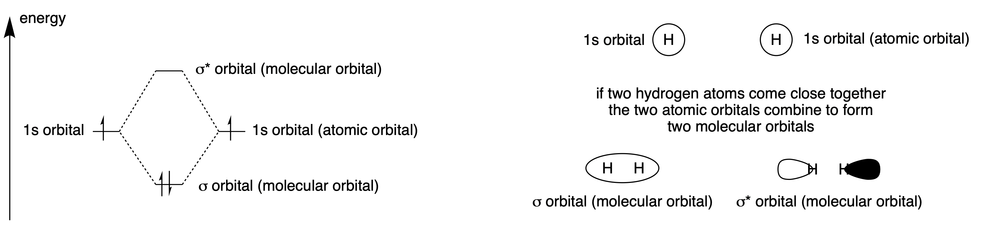
Figure 11: Two atomic orbitals interact to give two molecular orbitals, one lower in energy and one higher. The antibonding (higher) orbital is slightly further abovet the energy of the atomic orbitals than the bonding orbital is below it. The electrons both go into the lower energy orbital, so the overall energy of the molecule is lowered by forming a bond between the atoms. The atomic orbitals are labelled \(1s\) and the molecular orbitals, which have no nodes when viewed along the bond, are labelled with the Greek letter for s: \(\sigma\).
Figure 11 shows that the energy of the system goes down when to hydrogen atoms interact and so there is a driving force to form an H2 molecule. Hydrogen can exist in a metallic state, but only at extremely high pressures so that the atoms cannot escape from each other. Helium atoms have similar orbitals, except they have two electrons instead of just one. Forming He2 would raise the energy of the system, and so helium exists as isolated atoms and not as a diatomic molecule. In a similar way, two hydrogen molecules do not interact to form a four-atom hydrogen system. The two bonding orbitals would interact, forming a higher and lower energy orbital. They would all be filled with electrons and so the interaction would not be favourable.
If a diatomic hydrogen molecule interacts with a proton (a hydrogen cation), then there is a favourable interaction. The vacant \(1s\) orbital interacts with the bonding \(\sigma\) orbital, forming an equilateral triangle with a hydrogen atom at each vertex. This leads to a net lowering of the energy of the system. \(H_3^+\) is rare on earth, because it reacts with almost everything it encounters. The trihydrogen cation is probably one of the the most common ions in the universe, however, having been observed first on Jupiter and then almost everywhere else that astronomers have looked for it.
All of the second row of the periodic table can form diatomic species, except beryllium which has a filled \(2s\) orbital just as helium has a filled \(1s\) orbital, and for neon, which has filled \(2s\) and \(2p\) orbitals, so all interactions lead to an increase in energy. Under terrestrial conditions, lithium, beryllium boron and carbon prefer to form macromolecules rather than diatomics.
Two hydrogens atoms interact to form diatomic H2. A hydrogen and a lithium atom interact in a similar way to for LiH. The \(2s\) orbital on lithium is higher in energy than the \(1s\) orbital on hydrogen, even though lithium has a nucleus with three positive charges, so the bonding orbital is polarised towards the hydrogen. This gives the molecule a dipole, with a partial positive charge on the lithium and a partial negative charge on the hydrogen. Beryllium, whose \(2s\) orbital is lower in energy than lithium because of the extra positive charge on the nucleus, forms linear dihydridoberyllium. Boron, which has three electrons in the \(n=2\) level, interacts with three hydrogen atoms to form trigonal planar borane. All three of these molecules will interact to form larger assemblies if present in high enough concentration as they all have vacant \(n=2\) orbitals which can accept electrons from other molecules.
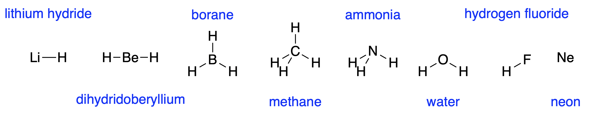
Figure 12: the hydrides of the second row elements
Carbon, with four \(n=2\) electrons, can form four bonds to hydrogen to form tetrahedral methane. The geometry arises because the bonds repel each other, and the tetrahedral shape allows them to be as far away from each other as possible. This repulsion between bonds also leads to the trigonal planar borane geometry and the linear dihydridoberyllium geometry. The energy of the \(2s\) orbital goes down along the second row of the periodic table as the nuclear charge increases. For carbon, the \(2s\) orbital is lower in energy than hydrogen’s \(1s\) orbital, and so the bond is slightly polarised towards the carbon.
Nitrogen has five \(n=2\) electrons. Sharing electrons with five hydrogen atoms would give a total of ten electrons which would not all fit in the \(n=2\) level. The \(n=3\) level is much higher in energy. Nitrogen forms three bonds with hydrogen, forming ammonia. The left over pair of electrons occupy the space of a bond, and a called a lone pair. Ammonia is tetrahedral with one vertex missing. The lone pair is slightly bigger than a bond, as the electrons are closer to the nitrogen, on average.
Oxygen forms water with two bonds to hydrogen, which are quite strongly polarised towards oxygen as the \(n=2\) orbitals of oxygen are lower in energy than hydrogen. Its remaining electrons form two lone pairs. This means that the partial positive charge on the hydrogens can interact favourably with the lone pairs to hold the molecules together. This is why water has a high boiling point and is liquid over quite a range of temperatures. Ammonia and hydrogen fluoride show similar effects, but to a lesser extent as they cannot form so many hydrogen-lone pair interactions, also called hydrogen bonds. Life probably requires the presence of a liquid. Water is particularly good at being a liquid, but other substances, including hydrogen fluoride, ammonia and methane may readily be available in a liquid state.
Fluorine forms just one bond to hydrogen and neon forms none.
Hybridisation#
The shapes of the molecules in Figure 12 depend on the number of bonds formed and the number of lone pairs around the central atom. The molecular orbitals form by all of the \(2s\) and \(2p\) orbitals of the central atoms interacting with the \(1s\) orbitals of the hydrogen atoms. It is possible to calculate how this happens, and the calculations are rather complicated as there are a lot of interactions to consider. It is difficult to think about this in an intuitive way.
It would be much easier if all of the orbitals interacted in pairs, and it was not necessary to consider the interaction of every orbital with every other orbital. This can be achieved, more or less, by first combining the atomic orbitals so that they point along the directions of the bonds, and then considering the interactions to form the bonds, which will be almost all with the orbital pointing in the right direction. Consider methane: it is not obvious how a spherical \(2s\) orbital and three perpendicular \(2p\) orbitals can combine to form a tetrahedron. We can note, however, that the \(2p\) orbitals do add up to a sphere if the expressions for the wavefunctions are squared and summed (\(\Psi_x = (r/a_0)e^{-r/2a_0} cos\theta cos\phi\); \(\Psi_y = (r/a_0)e^{-r/2a_0} cos\theta sin\phi\); \(\Psi_z = (r/a_0)e^{-r/2a_0} cos\theta\)). The four atomic orbitals can be added together and divided equally into four to give four identical orbitals, each pointing to the vertex or a tetrahedron and together adding up to a sphere. Such orbitals are called \(sp^3\) hybrid orbitals, because each one contains one part of an \(s\) orbital and three parts of an \(p\) orbital. The central carbon atom of methane is often labelled as having \(sp^3\) hybridisation, as is the nitrogen of ammonia and the oxygen of water.
Combining the \(s\) orbital with just two \(p\) orbitals gives a trigonal planar shape, with the remaining \(p\) orbital perpendicular to the plane of the other orbitals. The boron atom in borane is said to have \(sp^2\) hybridisation. If a \(s\) orbital is combine with just one \(p\) orbital, the resultant \(sp\) orbitals will be linear, sticking out of opposite sides of the atom. The two unhybridised \(p\) orbitals will be perpendicular to this line. Dihydridoberyllium is an example of a molecule with this geometry and hybridisation (Figure 12).
Figure 13 illustrates carbon atoms in the \(sp\), \(sp^2\) and \(sp^3\) hybridisation states. These are linear, trigonal planar and tetrahedral, respectively. The two unhybridised \(p\) orbitals that remain after the two \(sp\) hybrid orbitals are formed have been omitted from the figure. Similarly the one unhybridised \(p\) orbital has been omitted from the \(sp^2\) picture. To a reasonable approximation, atoms which form bonds along the directions of the hybridised bonds will interact only with one orbital, forming a \(\sigma\) bond in this direction and an anti-bonding \(\sigma*\) bond. This approximation works well for for most organic molecules and makes it possible to understand the structures of large molecules.
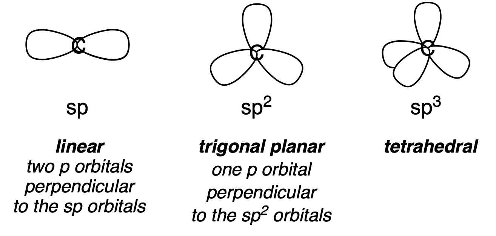
Figure 13: Hybridisation of carbon atoms
Multiple bonds#
The idea of hybridisation is useful in the analysis of other structural features. Carbon atoms can form \(\sigma\)-bonds to other carbon atoms, and these bonds are quite strong and so are very commonly observed. The simplest example of this is ethane, with the formula \(C_2H_6\). The names of these molecules are familiar to most chemists, but structures are the most important way to convey molecular information.
Figure 14 shows ethane, and also a molecule with two hydrogen atoms fewer, called ethene, and one with two more hydrogens removed called ethyne. The missing hydrogens allow the carbon atoms to have different hybridisation states. For ethene, there are two \(p\) orbitals next to each other, which can form a bond called a \(\pi\) bond, following the convention of translating Roman letters for atoms into Greek letters for bonds. For ethyne, each carbon atom now has two \(p\) orbitals, so two \(\pi\) bonds can form, making a triple bond. Multiple bonds are very common in the chemistry of carbon, but are usually less common for elements in the rows of the periodic table after two. The life that we know about makes extensive use of multiple bonding.
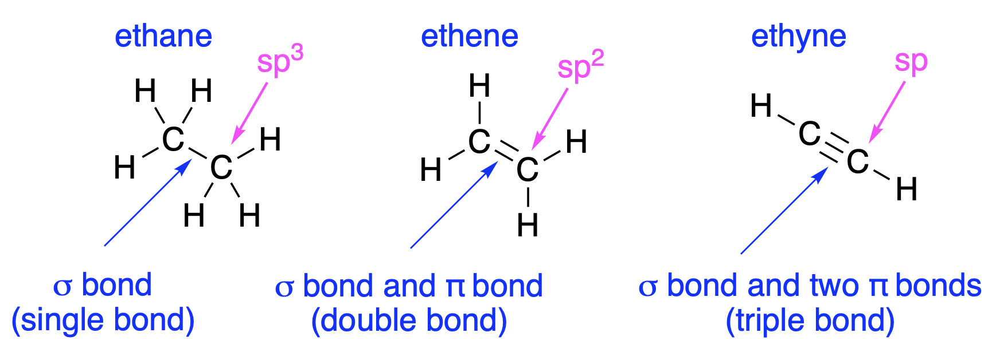
Figure 14: Ethane, ethene and ethyne
Figure 14 illustrates a standard way of drawing molecules. The \(sp^3\) atoms are drawn flat, because no information is added by showing they are tetrahedral. The reader is expected to know this. For more complex molecules, the reader is also expected to know that carbon (nearly) always forms four bonds, so any that are omitted are bonds to hydrogen. Hydrogen atoms with bonds to carbon are usually omitted altogether, and the C label for carbon is also omitted. Organic chemists know that carbon is the most important element, so any unspecified atom must be carbon.
Figure 15 shows molecules drawn in a standard way. The names are not important for this course; the structure is what matters. You should be able to work out how many hydrogens are missing and how they are connected to the structure. You should be able to work out which bonds are \(\sigma\) bonds which are are \(\pi\) bonds. All of the molecules are drawn flat. For some molecules the three-dimensional shape is important.
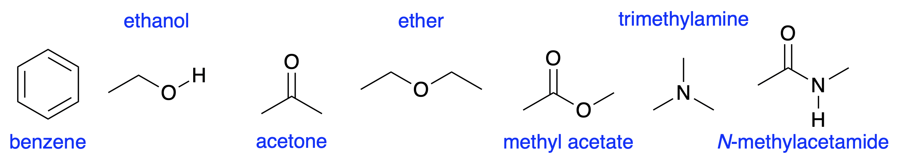
Figure 15: Some molecules, drawn in the conventional way